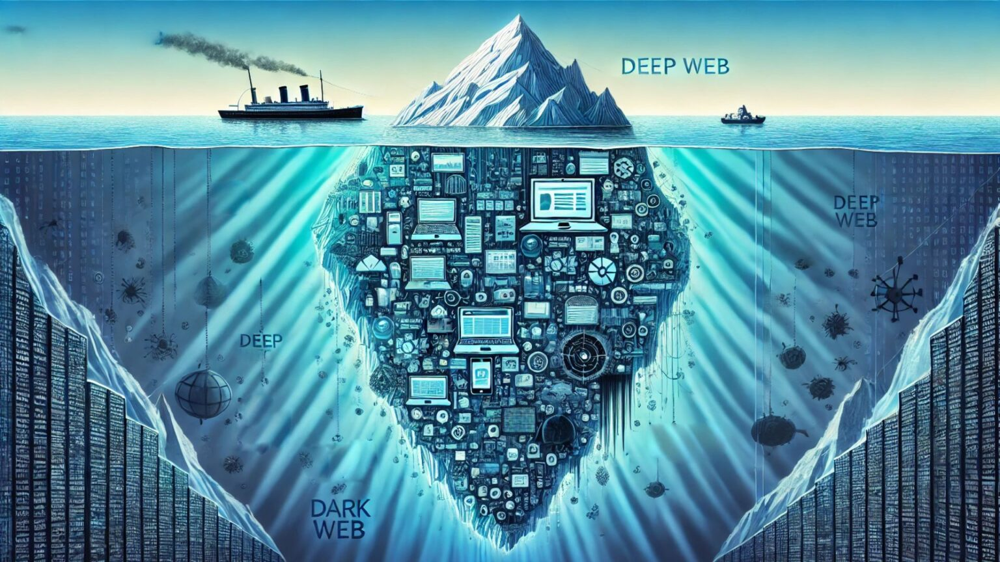

¿Sabías que el internet que usas todos los días representa
menos del 10% de todo lo que existe en la red?
Cada vez que buscas en Google,revisas tus redes sociales o compras en línea, solo estás navegando por la superficie
de un océano digital inmenso.Debajo de esa superficie se encuentra la Deep Web (Red Profunda)..
¿Qué es la Deep Web?
La deep web, también conocida como internet profunda, es aquella parte de la red que no aparece en los resultados de motores de búsqueda como Google o Bing. Está formada por páginas y recursos que no son indexados, por lo que permanecen ocultos al usuario común.
Aunque suele relacionarse con un espacio peligroso, lo cierto es que la deep web constituye la mayor parte de internet y cumple funciones legítimas. Alberga bases de datos académicas, registros médicos, intranets corporativas y documentos que requieren autenticación para acceder.
Es fundamental diferenciarla de la dark web. Mientras la deep web reúne información privada y de carácter legal, la dark web es una pequeña fracción que exige software especializado como Tor y que suele asociarse con anonimato extremo y actividades ilícitas.
Contenido no indexado
La deep web incluye páginas y archivos que los motores de búsqueda no pueden rastrear ni catalogar. Esto se debe a que son dinámicos, privados o deliberadamente excluidos de la indexación.
Acceso restringido
Gran parte de este contenido está protegido mediante contraseñas, sistemas de pago o procesos de autenticación. Esto asegura que solo personas autorizadas accedan a la información.
La dark web es una pequeña parte dentro de la deep web que requiere software especial para acceder.
A menudo se asocia con anonimato, investigaciones académicas y foros privados.
¿Qué oculta realmente la Deep Web?

Cuando la mayoría de las personas utiliza Internet, solo accede a una pequeña
parte conocida como Surface Web. Esta incluye sitios como Google, YouTube,
Facebook y Wikipedia. Sin embargo, debajo de esta capa visible existe una enorme
cantidad de información conocida como Deep Web.
La Deep Web está compuesta por contenidos que no aparecen en los motores de
búsqueda tradicionales. Entre ellos se encuentran bases de datos académicas,
registros médicos, sistemas bancarios, correos electrónicos, bibliotecas
digitales y documentos privados protegidos mediante autenticación.
Se estima que más del 90% de la información existente en Internet pertenece a
la Deep Web. Aunque muchas personas la relacionan con actividades ilegales,
la mayor parte de su contenido tiene usos legítimos y es utilizada diariamente
por empresas, universidades, gobiernos y usuarios comunes.
Video Explicativo
¿Cómo funciona la Deep Web?
El siguiente video explica las diferencias entre Surface Web,
Deep Web y Dark Web, así como los principales riesgos y usos
legítimos de estas tecnologías.